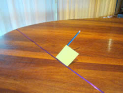
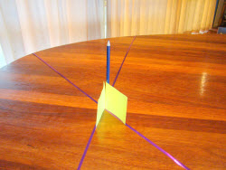
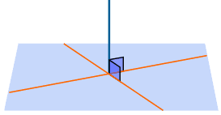
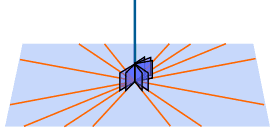
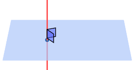
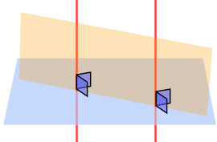
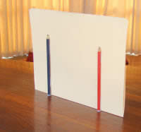
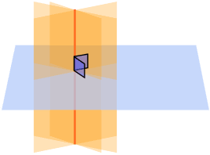
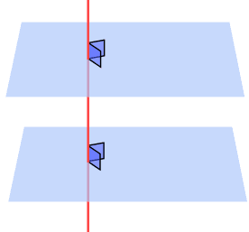
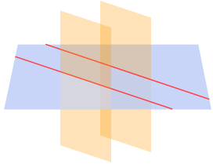

Parallel and Perpendicular Lines and Planes
| This is a line: |  |
Well it is an illustration of a line,
because a line has no thickness, and no ends (goes on forever).
| This is a plane: |
 |
OK, an illustration of a plane,
because a plane is a flat surface with no thickness that extends forever.
(But here we draw edges just to make the illustrations clearer.)
Perpendicular Lines
Two line are perpendicular when they are at right angles to each other.
The red line is perpendicular to the blue line in each of these examples:

(Read more about perpendicular lines.)
Perpendicular to a Plane
A line is perpendicular to a plane when it extends directly away from it, like a pencil standing up on a table.

If the pencil is perpendicular to a line on the table, then it might be perpendicular to the table:

Or it might be leaning over:

But when it is perpendicular to two lines (where they intersect) then it is perpendicular to the table:

It can't point anywhere else but directly away from the table.
So we can say this:
|  | When a line is perpendicular to two lines on the plane (where they intersect), it is perpendicular to the plane. |
|  | It will also be perpendicular to all lines on the plane that intersect there. |
And there is a lot more we can say:
|  | Through a given point there passes:
|
|  | two lines perpendicular to the same plane are coplanar (they lie on the same plane - the orange one) |
| If that is a little hard to understand, imagine two pencils standing on a table: they are in the same plane (the piece of cardboard): |  |
Perpendicular Planes
 |
A plane is perpendicular to another plane when it has a line that is perpendicular to the other plane |
|  | And when a line is perpendicular to a plane, then every plane containing the line is perpendicular to that plane |
Parallel Planes
|  | When two planes are perpendicular to the same line, they are parallel planes |
|  | When a plane intersects two parallel planes, the intersection is two parallel lines. |